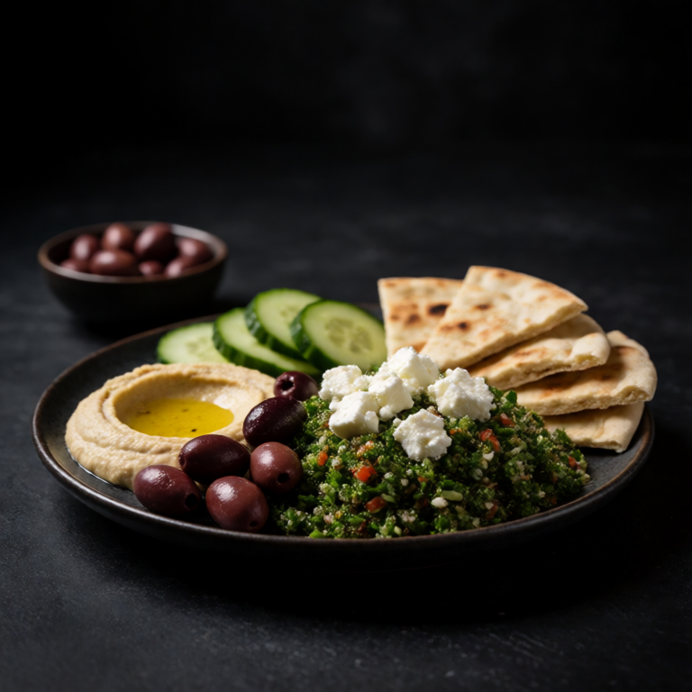

A good hummus plate hits different when the pita is warm and the toppings are thoughtful.
The arrangement is part of Hummus Plate with Warm Pita and Toppings. Leave good store bought hummus and pita bread in their own spaces, then let the creamy, crisp, and briny parts meet in different combinations.
At a Glance
Prep
5m
Cook
3m
Serves
1
Difficulty
Easy
Rate this slopBe the first to rate it.
Ingredients
Method
- 01
Warm pita
Place the 1 pita bread directly over a gas flame or in a dry pan for about 30 seconds per side until it puffs up and gets charred in spots.
- 02
Build the plate
Spoon the 1/2 cup of hummus into a bowl and use the back of a spoon to create a deep swirl in the center. Drizzle generously with olive oil and dust with 1/4 teaspoon of smoked paprika. Arrange the halved cherry tomatoes, sliced cucumber, and olives around the hummus. Tear the warm pita into wedges and serve alongside for dipping.
Easy swaps
No good store bought hummus? Any cheese, hummus, or tinned fish can anchor the plate. Keep one creamy thing, one crisp thing, and one briny thing and the board still works.
Storage
Store the pieces of this plate separately for up to two days. Cover good store bought hummus, protect pita bread from moisture, and bring everything together only when you are ready to eat.
Slop Notes
Sabra is fine but Ithaca or Oren's Hummus will genuinely change the dish.
Recipe by foidslop · How we create our recipes
The Weekly Slop
Seven dinners for one, one short note, every Sunday. No life story.
One email every Sunday. Unsubscribe whenever. Double opt-in. See the privacy policy.
Keep eating